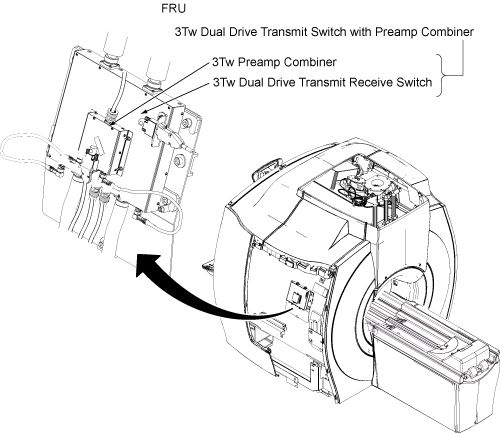
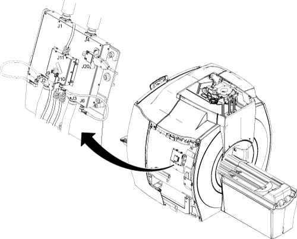
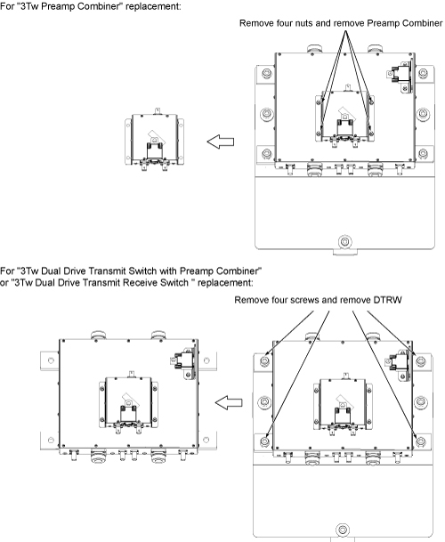

Operating Documentation
Direction 5670006, Rev# 1
Discovery MR750w GEM Service Methods
Module Version 3.0, Version Date 10/18/11
Operating Documentation |
| Required Persons | Preliminary Reqs | Procedure | Finalization |
|---|---|---|---|
| 1 | Not Applicable | 30 mins | 30 mins |
This procedure includes the following FRU parts replacement procedures
3Tw Dual Drive Transmit Switch with Preamp Combiner
3Tw Dual Drive Transmit Receive Switch
3Tw Preamp Combiner
Illustration 1: FRU

| Item | Qty | Effectivity | Part# | Manufacturer | |
|---|---|---|---|---|---|
| Non-magnetic Phillips Screwdriver | 1 | - | - | - | |
| Basic Hand Tool Set | 1 | - | - | - | |
| Item | Qty | Effectivity | Part# | Manufacturer | |
|---|---|---|---|---|---|
| 3Tw Dual Drive Transmit Switch with Preamp Combiner | 1 | - | Refer to FRU Manual | - | |
| 3Tw Dual Drive Transmit Receive Switch | 1 | - | Refer to FRU Manual | - | |
| 3Tw Preamp Combiner | 1 | - | Refer to FRU Manual | - | |
| ||||
| When removing and or replacing the DTRSW on the side of the magnet, ensure that the module is as far away from the magnet as possible when moving it. | ||||
Turn off the Scan Room Power Supply (SRPS) at the Penetration Cabinet.
Remove Right Side Center Cover and Right Side Rear Cover. Refer to Side and Top Cover Removal and Installation.
Illustration 2: Right Side Center Cover and Right Side Rear Cover

Disconnect cables connected to the DTRSW. See Illustration 3.
If you replace “3Tw Dual Drive Transmit Switch with Preamp Combiner”, remove all cables.
If you replace “3Tw Dual Drive Transmit Receive Switch”, remove all cables.
If you replace “3Tw Preamp Combiner”, remove cables from J9, J10, and J11 on Preamp Combiner.
Illustration 3: DTRSW Cable Connections

Remove the defective part.
For Preamp Combiner, remove four (4) nuts and remove the module.
For DTRSW, remove four (4) screws and remove the module.
Illustration 4: Remove Screws

| ||||
| Strong Magnetic Field! | ||||
| The module has no ferrous material and will not be attracted to the magnet, but eddy currents setup by the strong magnetic field interacting with the DTRSW can make it very hard for one person to handle. | ||||
| When removing and or replacing the DTRSW on the side of the magnet, always do so by keeping the module as far away from the magnet as possible while moving it . |
While carrying the module out of the magnet room, make sure to stay as far away from the magnet as possible.
If you are replacing 3Tw Dual Drive Transmit Receive Switch, remove “Preamp Combiner” and install it on the new 3Tw Dual Drive Transmit Receive Switch.
While carrying the module into the magnet room, make sure to stay as far away from the magnet as possible.
| ||||
| Strong Magnetic Field! | ||||
| The module has no ferrous material and will not be attracted to the magnet, but eddy currents setup by the strong magnetic field interacting with the DTRSW can make it very hard for one person to handle. | ||||
| When removing and or replacing the DTRSW on the side of the magnet, always do so by keeping the module as far away from the magnet as possible while moving it . |
Secure the module.
For DTRSW - Secure the module to the magnet by tightening the four (4) screws.
For Preamp Combiner - Secure the module to the DTRSW by tightening the four (4) nuts.
Attach all cables that were previously removed. See Illustration 3.
Replace side cover.
Perform TR Dynamic Disable Calibration.
Perform Dual Drive Quadrature Tool.
Perform SaveINFO to save new calibration values.
Complete a body and head test scan to make sure the system is functional.